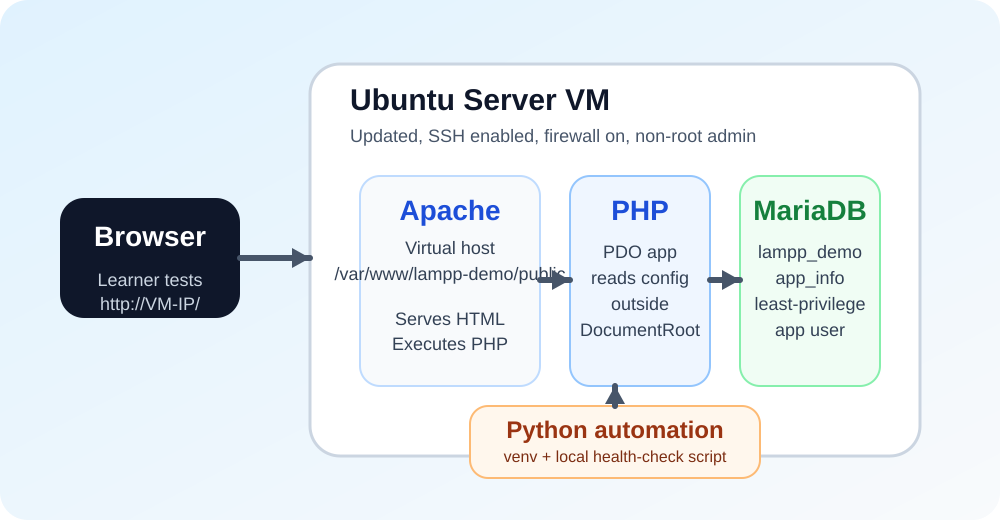
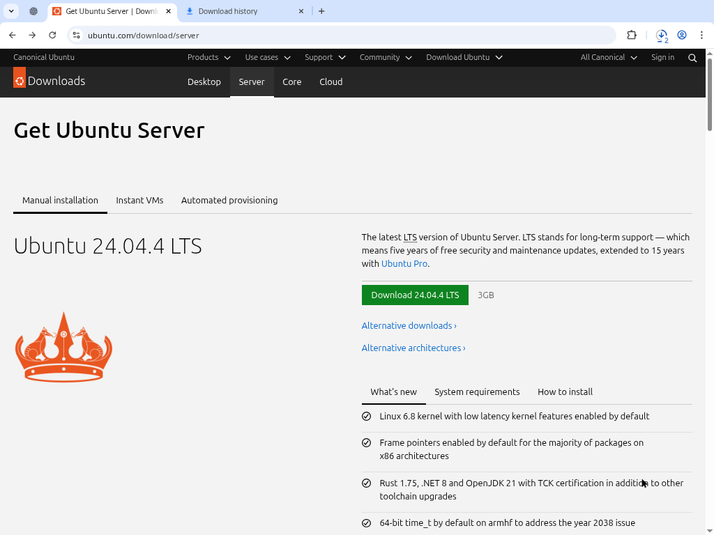
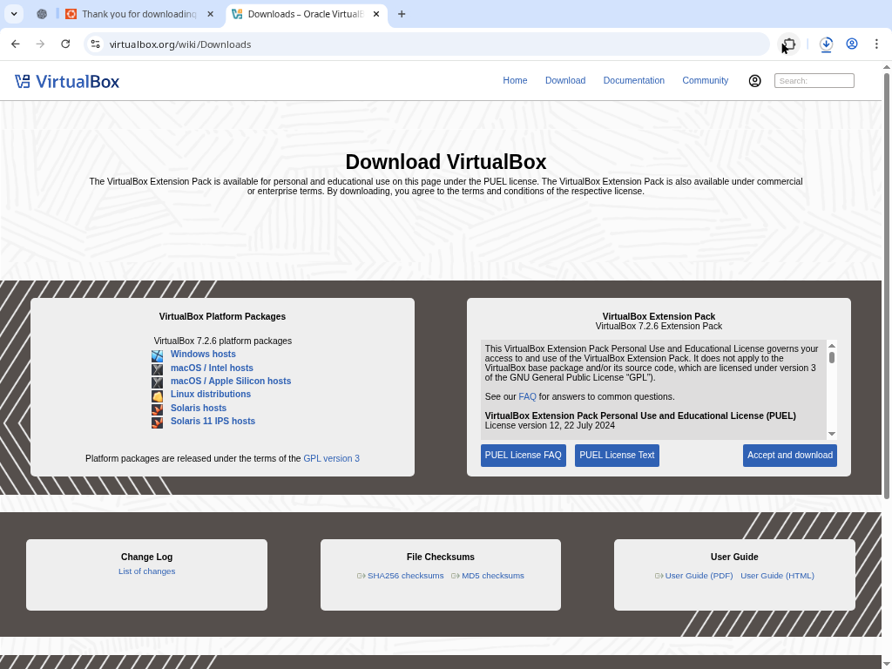
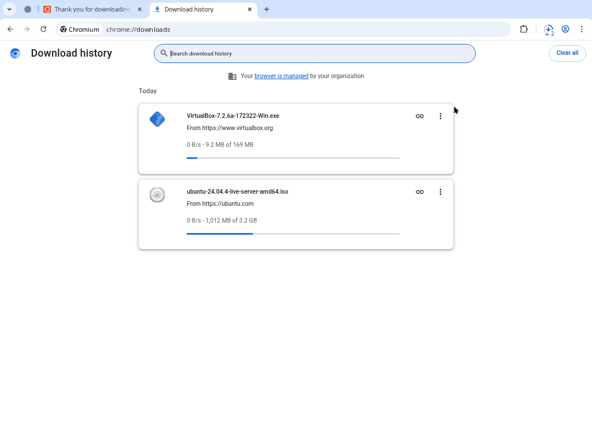

Hands-on module
Module 0: Introduction and Planning
Define the target build and gather the required files before you touch the VM.
Module progress
0 of 0 checkpoints completed
Your checklist progress is stored in your browser only on this device.
What you will complete
- Identify the target stack and what each layer does.
- Confirm tools, ISO, VM resources, and success criteria.
- Prepare an evidence package plan for submission.
Steps
Understand the target architecture
In this RLO, you will build an Ubuntu Server VM that hosts:- Apache as the web server
- MariaDB as the relational database
- PHP for dynamic web pages
- Python for server-side automation

Gather the required resources
Before you build the VM, prepare the two host-side items you need: the Ubuntu Server LTS ISO and a working hypervisor. The steps below use VirtualBox on Windows, which is a common RLO setup.
Focus on the page structure, not the exact version number: download pages change over time, so use the screenshots as layout references even if the release shown in the example is older than the current one.
1. Download the Ubuntu Server ISO
- Open the official Ubuntu Server download page in your host browser.
- Choose the most recent Ubuntu Server LTS release, not the desktop edition.
- Download the 64-bit AMD64 ISO file.
- Save the file somewhere easy to find later, such as
Downloadsor a dedicatedisosfolder. - Wait for the download to finish completely before moving on.
- Confirm that the downloaded file ends in
.isoso you know you have the installer image and not a web shortcut.

2. Install VirtualBox on the host machine
- Open the official VirtualBox downloads page in your browser.
- Download the Windows hosts installer if your host computer runs Windows.
- Close other applications so the installer can add required drivers cleanly.
- Run the installer and allow Windows to approve the installation if a security prompt appears.
- Keep the default installation options unless your environment requires a different location.
- Approve any Oracle or networking driver prompts during setup. VirtualBox networking features depend on those components.
- Finish the installation and launch VirtualBox once to confirm it opens without errors.

Windows hosts installer. The extension pack shown on the right is optional for this RLO.3. Confirm that the host is ready for Module 1
- Make sure you can locate the Ubuntu ISO from File Explorer.
- Make sure VirtualBox opens and lets you start the new VM wizard.
- Keep at least 25 GB of free disk space available on the host for the virtual disk and snapshots.

For this guided RLO, a practical VM baseline is:
- 2 vCPUs
- 4 GB RAM
- 25 GB dynamically allocated disk
- NAT networking for internet access
Create an evidence checklist before starting
Keep a folder on your host machine for screenshots and notes. Capture evidence as you go instead of trying to recreate it later. A good evidence package for this RLO includes:- VM settings screen
- Ubuntu login prompt and IP address
- Firewall status
- Apache page loading in a browser
- MariaDB login and database listing
- PHP demo page showing a successful database connection
- Python script output
Evidence to capture
- A note stating the target architecture and what each component will do in the VM.
- A screenshot showing the downloaded Ubuntu Server ISO on the host machine.
- A screenshot showing the installed hypervisor open and ready to create a new VM.
- A note or screenshot capturing the planned VM baseline.
- A screenshot of the evidence folder you will use to store screenshots and notes for the rest of the RLO.